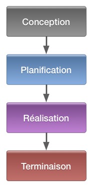
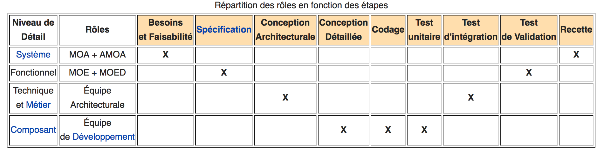
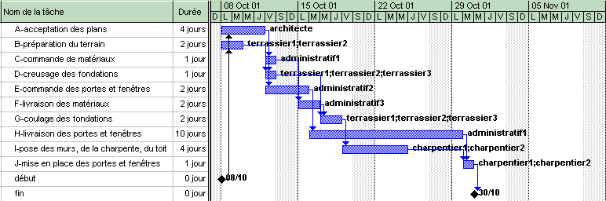
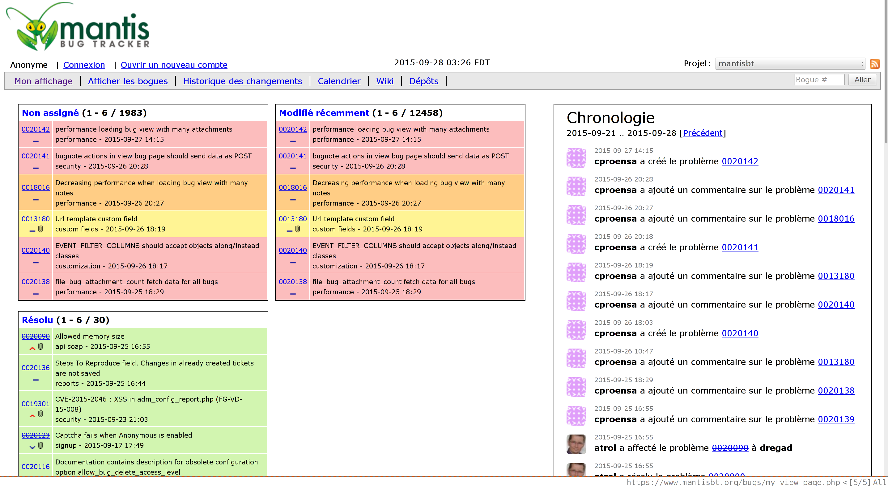

Conduite de Projet
Introduction
Présentation
- Maître de conférences associé à mi-temps
- Chef d'entreprise : Voxolab
- vincent.jousse@univ-lemans.fr
Objectifs du cours
- Devenir chef de projet… ou pas
- Être sensibilisé à la gestion de projet en entreprise
- Connaître et utiliser les outils les plus courants
- Savoir gérer ses projets
Déroulement
- 4 cours de 2 heures
- 3 TD/TP de 2 heures : pratique des outils (git, gestionnaire de tâches, …)
Prêts ?
Projet (1/2)
On appelle projet un ensemble finalisé d’activités et d’actions entreprises dans le but de répondre à un besoin défini dans des délais fixés et dans la limite de l'enveloppe budgétaire allouée.
Projet (2/2)
En pratique, « le projet est tourné vers l'objectif final, il doit être adaptable à des modifications fréquentes, mais maîtrisé et planifié. Donc toute modification doit rester planifiée. Et notamment, le projet doit rester dynamique et équilibrer continuellement les contraintes techniques, de coût et de délai. »
Introduction
Les contraintes
- Délais
- Coûts
- Qualité
Les 4 phases
- Conception
- Planification
- Réalisation
- Terminaison
1 — Conception
- But du projet
- Organisation
- Estimation des ressources/coûts/délais
- Estimation des risques
2 — Planification
- Déroulement
- Détail des coûts/délais
- Définition des responsabilités
3 — Réalisation
- Mise en place de l'organisation
- Éxécution des travaux
- Pilotage coûts/délais/spécifications
- Gestion des problèmes
4 — Terminaison
- Améliorer le développement des projets futurs
- Analyse des différences prévu/réalisé
- Évaluation du projet
Les modèles
Modèle en cascade (1/3)
Modèle en cascade (2/3)
Caractéristiques
- hérité de l'industrie et du BTP
- principe de non-retour
- livrables précis et datés
- petits systèmes / systèmes figés
Modèle en cascade (3/3)
Inconvénients
- effet tunnel
- délais avant de voir le résultat
- utilisateur et tests en dernier
- peu adapté aux projets complexes
Cycle en V (1/4)

Cycle en V (2/4)
- palier les problèmes de réactivité
- retours en arrière possibles
- standard dans beaucoup de domaines
Cycle en V (3/4)
Répartition des rôles
Cycle en V (4/4)
Jargon
- Maîtrise d'ouvrage (MOA) : MOAS (stratégique), MOAD (délégué), MOAO (opérationnel), AMOA (assistant), …
- Maîtrise d'œuvre (MOE)
- Maîtrise d'œuvre déléguée (MOED)
Modèle en spirale (1/2)

Modèle en spirale (2/2)
- évolution du cycle en V
- implémentations de versions successives
- produit de plus en plus complet
- réduction des risques
Modèle semi-itératif (1/2)

Modèle semi-itératif (2/2)
- Expression des besoins / conception
- Construction du produit / Validation
- Courtes itérations
- Méthodes agiles
Tout ça pour éviter
Les outils
Le diagramme de Gantt
 http://www.ganttproject.biz/Bug tracker
Gestionnaire de version de code
- CVS
- SVN
- GIT